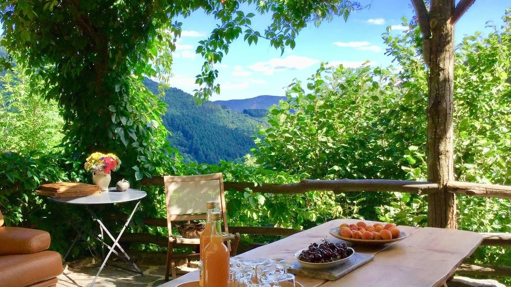
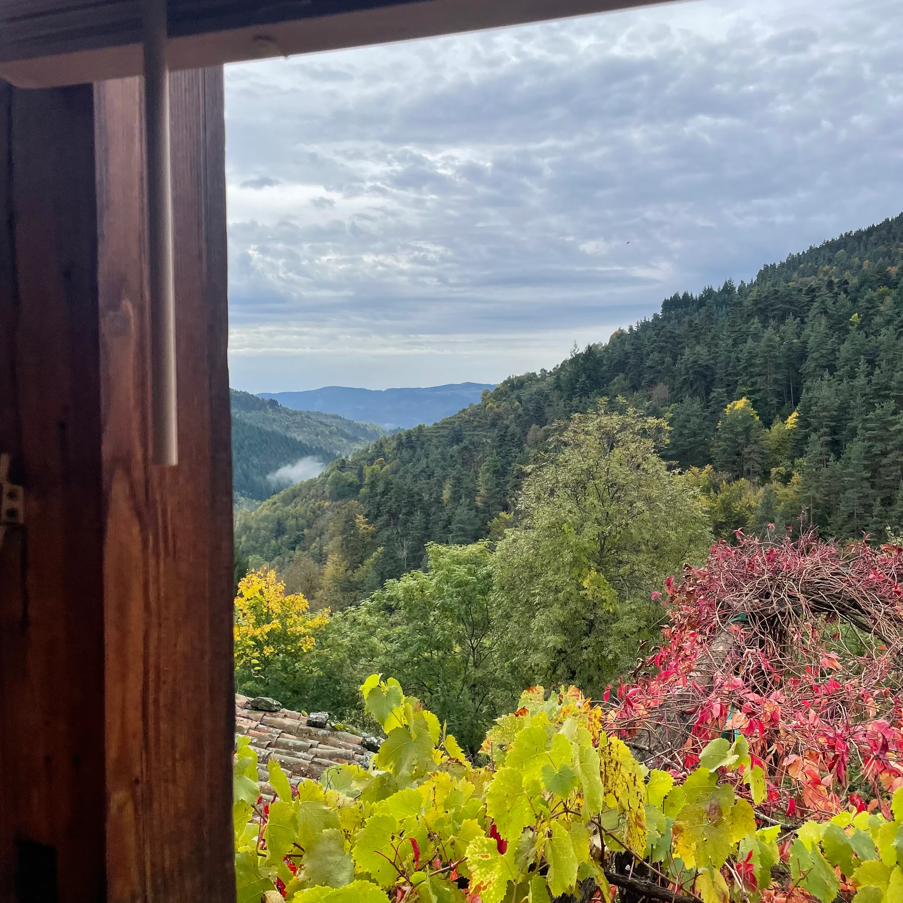
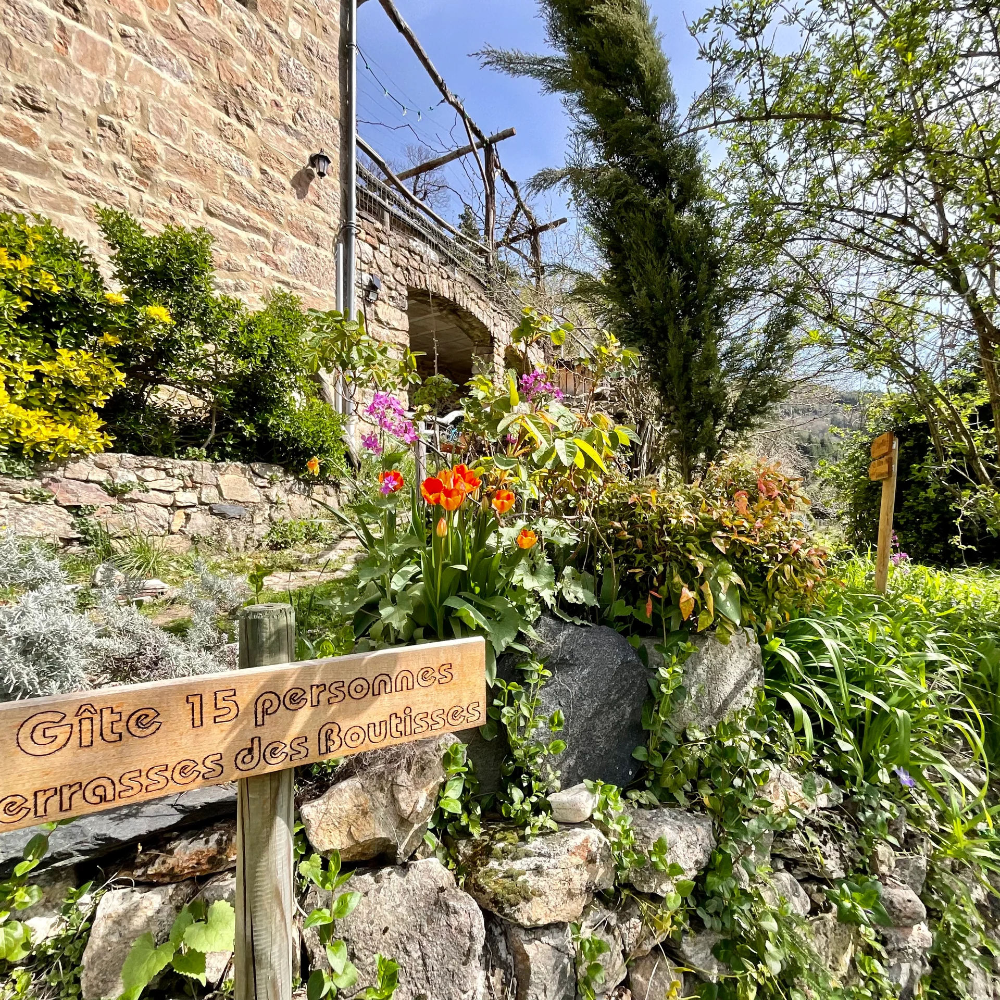
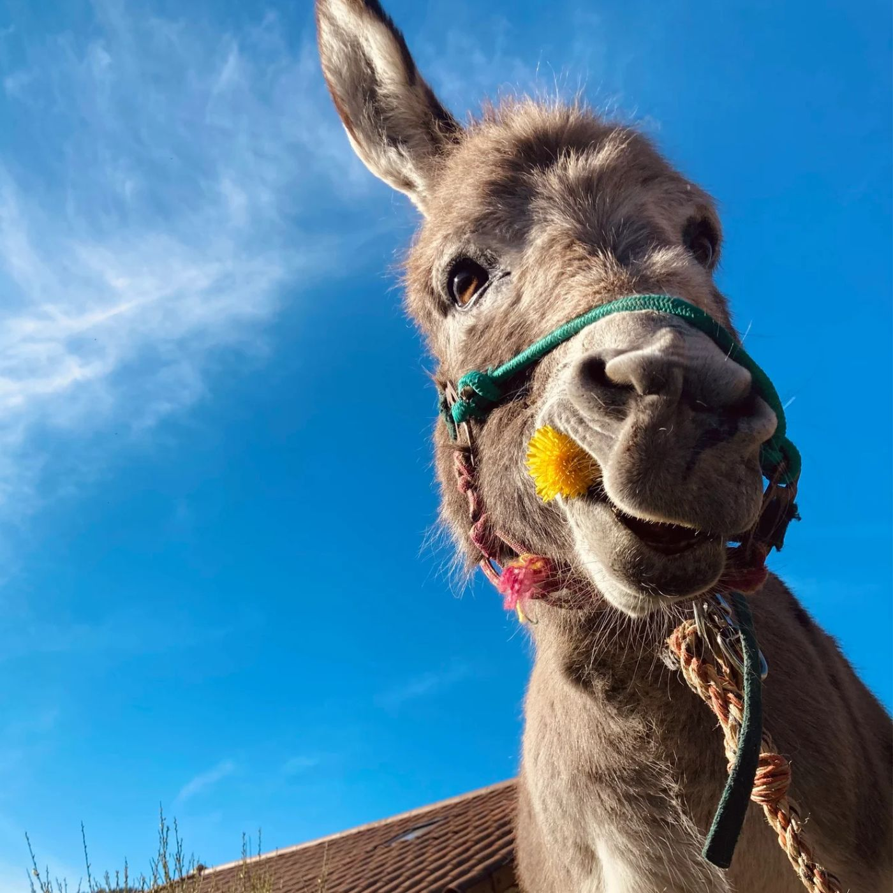

Gîte Les Terrasses des Boutisses
Au coeur des Monts d'Ardèche
Bienvenue au gîte Les Terrasses des Boutisses
Un lieu hors du temps, au cœur des Monts d’Ardèche
Ici, le temps ralentit.
Niché au cœur des Monts d’Ardèche, entouré de forêts de châtaigniers, le gîte Terrasses des Boutisses vous offre une véritable parenthèse de calme, de nature et de convivialité, avec une vue imprenable sur la vallée.
Que vous veniez en famille, entre amis ou en groupe, vous découvrirez un lieu chaleureux et ressourçant, propice aux retrouvailles et aux moments partagés, loin du bruit et du stress du quotidien.vous découvrirez un lieu chaleureux et ressourçant, propice aux retrouvailles et aux moments partagés, loin du bruit et du stress du quotidien.


Le gîte et ses espaces de vie
Le gîte peut accueillir jusqu’à 15 personnes et s’organise autour de deux ensembles complémentaires, pensés pour s’adapter à la taille de votre groupe.
La maison principale (jusqu’à 9 personnes)
C’est le cœur de la vie commune :
Deux grandes chambres avec mézzanines composées d'un lit queen size et de 2 lits simples pour l'une et 3 pour l'autre.
Un vaste espace salon et salle à manger avec cheminée.
Une cuisine moderne et entièrement équipée.
Deux salles de bains avec douche.
Et une grande terrasse avec vue sur la vallée, idéale pour les repas et les fins de journée


Les chambres extérieures
Pour les groupes plus nombreux, trois chambres indépendantes, attenantes à la maison principale, viennent compléter l’ensemble.
Appréciées pour leur calme, leur intimité, il y a :
2 chambres avec lit double et 1 chambre avec 3 lits simples,
dont une avec salle de bain partagée.
Une cuisine d’été se trouve juste devant les chambres,
ainsi que de très belles toilettes sèches, propres, confortables et parfaitement entretenues
Ces espaces sont ouverts progressivement selon le nombre de voyageurs, afin de garantir confort et cohérence.
Le lieu
Espace de vie et de bien-être, ce lieu vous est offert pour le bien des petits et des grands.
Le gîte s’inscrit dans une démarche simple, respectueuse et durable, en harmonie avec son environnement :
toilettes sèche, chauffage solaire et au bois, respect du rythme de la nature.


Sur place, petits et grands feront la connaissance des animaux du lieu :
ânes, chèvres, poules et coqs participent pleinement à la vie du hameau et au charme du séjour.
Accueil & accompagnement
La maison est attenante au gîte. Je suis disponible avant et pendant votre séjour et j'aurai plaisir à répondre à toutes vos questions, vous conseiller sur les randonnées, partager les bonnes adresses locales, ou simplement m’assurer que tout se passe bien pour vous.
Vous êtes autonomes, mais jamais seuls.

"Je suis une amoureuse de la Nature et des grands espaces. J’essaie de prendre soin d’un petit bout d’Ardèche, et de vivre en harmonie avec la nature en la préservant durablement." Sabine